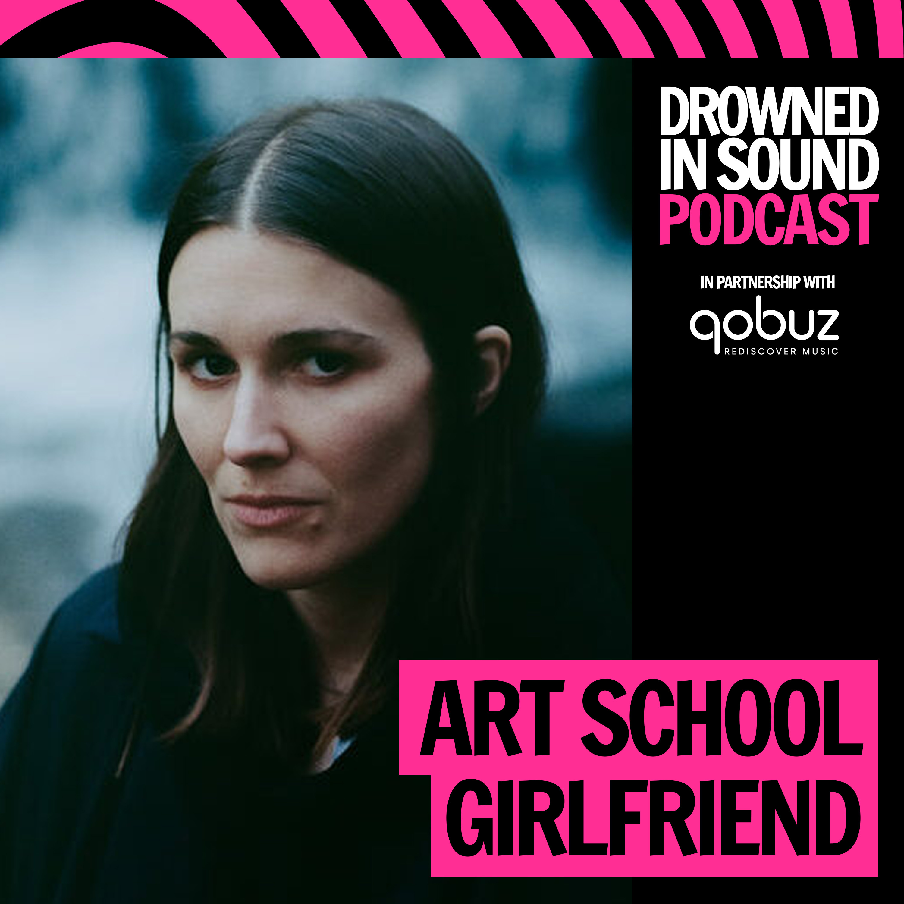
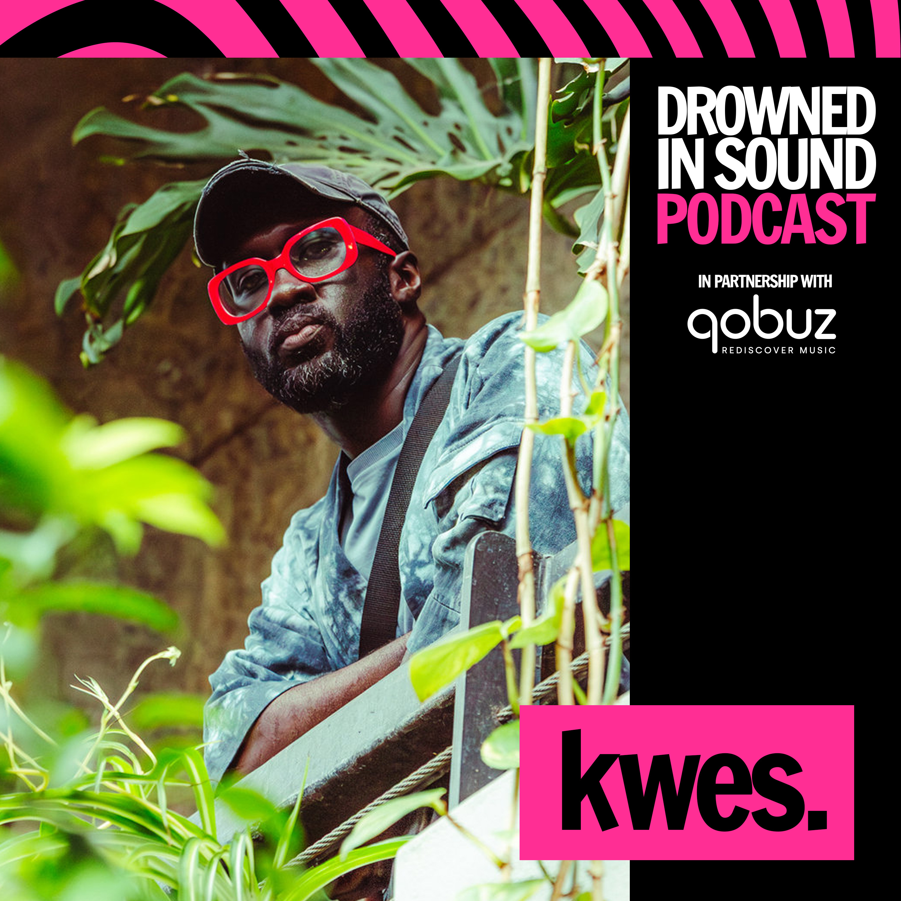
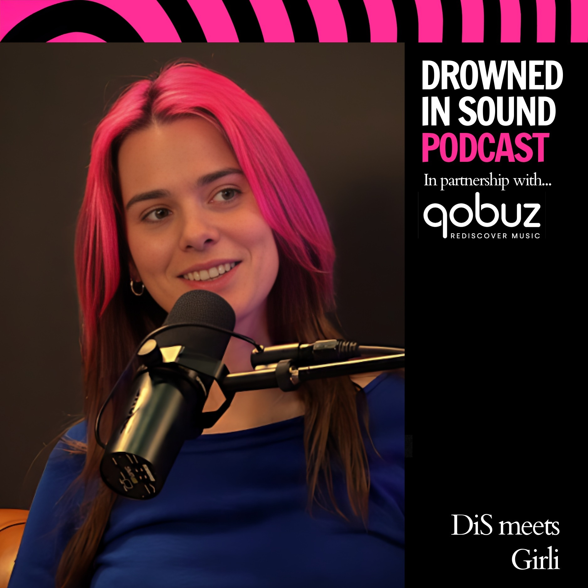
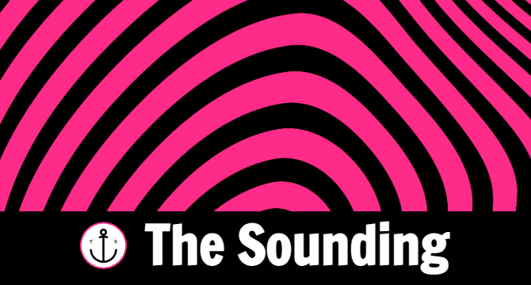
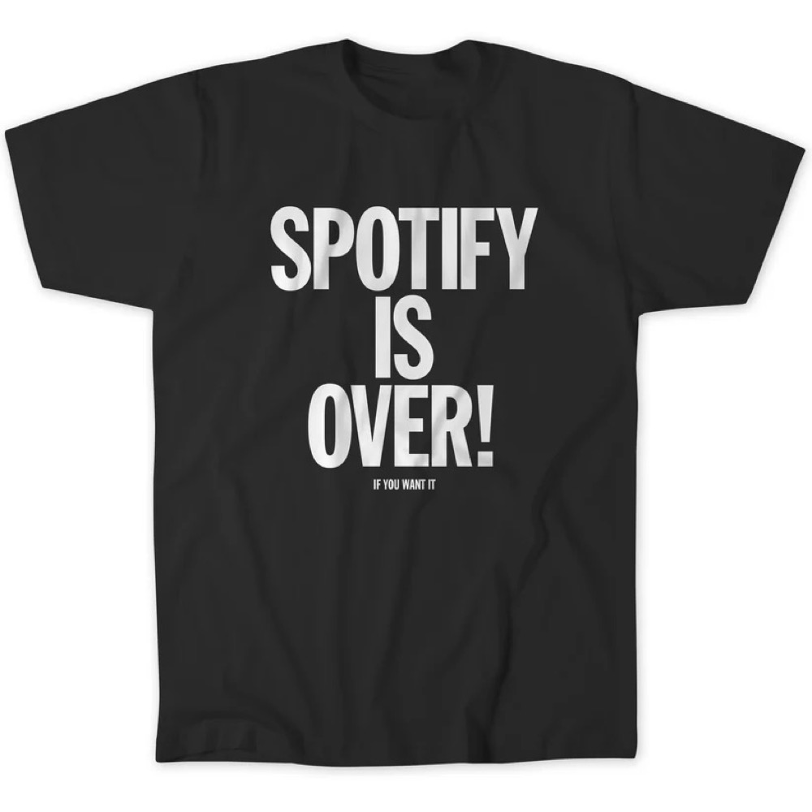
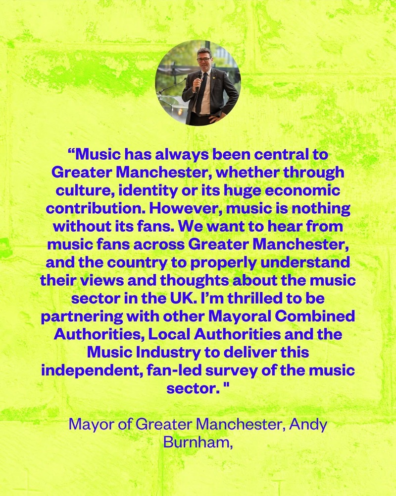

Current Projects
Podcast
Drowned in Sound Podcast
Conversations about music, power, and what comes next. Recent guests include Enter Shikari, Faithless, Kelly Lee Owens, Gazelle Twin, and Lord Kevin Brennan. 300,000 impressions/month. 50,000 downloads/year. +100% growth in the last 6 months. Joined more recently by co-host Helena Wadia. Sponsored by Qobuz.



Who We Platform
A male-hosted podcast where 63% of our 93 guests are female or non-binary, more than double the industry average.
88% of our episodes feature at least one female or non-binary guest
Industry average: 37.4%. Growing year on year - 70% in 2025, 77% in early 2026.
DiS guest data (internal audit, 93 guests, 2015–2026) · USC Annenberg Inclusion Initiative, Nov 2025

Newsletter
The DiS Newsletter
A weekly newsletter recommending music and investigating the systems behind it - to 8,000+ subscribers, with a 48% open rate (industry average: ~20%). Streaming economics, venue closures, gender equity, AI, and climate, alongside the music DiS was built on.
Learn More →
Community
The DiS Community
The forums launched alongside the website in 2000, survived the hiatus, and still rack up 2–3 million pageviews a month. A quarter of a century old and still going.
Learn More →
Media & Consultancy
The Sounding (co-founded with Tom Venvell, 2025)
The independent media production company behind DiS, the DiS Podcast, and a growing network of shows. What started as a growth consultancy is now the house that makes the network run.
Learn More →Founded 2025
Association of Music Editors
A collective voice for editors of music publications, podcasts and zines. Because the attention economy is eating music journalism alive, and someone has to say so.
Learn More →Coming This Autumn
A Print Magazine For Live Music Fans
A quarterly print magazine made possible by funding support from Music Venue Trust, distributed free in grassroots venues across the UK. Working title still to be locked, more to come.

Campaign · 2025
Spotify Exodus Series
DiS’s investigative coverage of the #DisarmSpotify movement sparked a movement among artists and fans, generating 10 million+ campaign impressions.

Campaign
Music Fans Voice
A survey engaging 8,000 participants that helped drive the UK government to launch a fan-led review of live music.
Learn More →